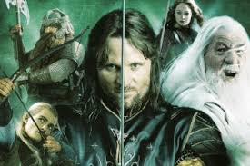

A Gyűrűk Ura
J. R. R. Tolkien angol író és filológus világhírű fantasy-regénye. A történet a szerző A hobbit (Szobotka Tibor fordításában: A babó) című korábbi munkájának folytatása. 1936 és 1949 között készült és 1954–1955-ös megjelenése óta világszerte több mint 150 millió példányban kelt el. A regény a fantasy műfaj egyik alapja, a világ egyik legjelentősebb irodalmi alkotása, amely szinte minden fantasy-íróra rendkívül nagy hatással volt és hatással van ma is.
Habár általában három kötetben (A Gyűrű Szövetsége, A két torony, A király visszatér) jelenik meg és gyakran helytelenül trilógiának nevezik, a Gyűrűk Ura egységes egészet alkotó, hat könyvből és függelékekből álló, kiadástól függően mintegy 1800 oldalas mű. Magyarul első ízben a Gondolat Kiadó jelentette meg 1981-ben. Az 1–11. fejezetet (a verseket is) Réz Ádám fordította magyarra, s ő alkotta meg a mű magyar terminológiáját is (a Gyűrűk Urában és háttérmitológiájában mintegy 5000 tulajdonnév szerepel). A könyv további részét Göncz Árpád későbbi köztársasági elnök fordította, a versfordítások itt Tandori Dezső munkái.
A regény élőszereplős filmváltozata 1999 és 2003 között készült Peter Jackson új-zélandi filmrendező vezetésével. A három film kritikai és kasszasikert aratott.

A történet címe Sauronra, Mordor Sötét Urára utal, ő a legfőbb gonosz a történetben. Ő alkotta meg a Hatalom Gyűrűit és az Egy Gyűrűt, amivel a Hatalom Gyűrűinek urává vált. Mivel Sauron a leghatalmasabb erő a műben, és hatalma az egész halandó világot fenyegeti, sőt, már nevének kimondása is bajt hozhat, ezért a könyv szereplői (Sauron ellenségei és szolgái is) gyakran tulajdonnévi szerepű (néha metaforikus) leírásokkal, valóságos epitheton ornansokkal helyettesítik a nevét: „a Sötét Úr”, „Ő”, „a Gyűrűk Ura”, „a Föld Ura”. Korábban Sauron a Világ Fekete Ellenségének, Morgothnak volt szolgája, az ő legyőzéséről Tolkien A szilmarilok című regénye szól.
A művet, részben a háború utáni papírhiány, részben árának viszonylag alacsonyan tartása és a mű hossza miatt, három kötetre szedték (A Gyűrű Szövetsége: I. és II. könyv; A két torony: III. és IV. könyv; A király visszatér: V. és VI. könyv + függelékek). A függelékek és a térképek lassú készülte miatt a megjelenés elhúzódott: a kötetek sorrendben 1954. július 29-én, november 11-én és 1955. október 20-án kerültek az Egyesült Királyság könyvesboltjainak polcaira; valamivel később az Egyesült Államokban is kiadták. Különösen "A király visszatér" kiadása késett. Tolkien maga nem szerette a harmadik kötet címét, mert szerinte túl sokat elárul a történetből. Maga részéről A Gyűrűháború elnevezést javasolta, de ebbe a kiadónál nem egyeztek bele.